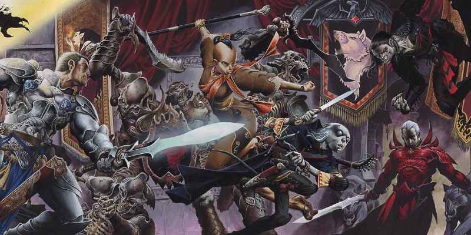

Eberron : Objets magiques
La magie des arcanes joue un rôle central dans le monde d'Eberron. Les objets magiques communs sont des objets de tous les jours. En Aundair, les porteurs de baguettes commencent à dépasser en nombre ceux qui utilisent l'arc et l'épée.
Focaliseurs arcaniques
Si vous vous rendez au bazar de Sharn ou au marché de n'importe quelle enclave de la maison Cannith, vous trouverez une large sélection de focaliseurs arcaniques parmi lesquels vous pourrez choisir le vôtre. Pour un porteur de baguettes, le choix d'un focaliseur arcanique a la même importance que celui d'une rapière ou d'un maillet pour un duelliste. Choisirez-vous une baguette de cendres de Fernian pour focaliser vos éclairs de feu, ou déciderez-vous de renforcer vos défenses contre le froid au moyen d'un orbe de Risian ? Un focaliseur arcanique est un outil, et en tant que tel il ne donne ses bénéfices qu'à celui ou celle qui sait l'utiliser habilement. Et dans les nations du Khorvaire, les focaliseurs arcaniques sont considérés comme des armes : si des gardes demandent de leur remettre les épées et les arcs à l'entrée d'un bâtiment, ils en feront de même pour les bâtons.
Bois imprégné
Objet merveilleux, commun (nécessite un lien)
De puissantes zones manifestes peuvent infuser des énergies planaires aux arbres locaux. Un artificier doué peut y puiser pour créer des baguettes, des bâtons et des sceptres qui se révéleront particulièrement efficaces pour canaliser un type particulier d'énergie. Lorsque vous lancez un sort qui inflige des dégâts du type associé au matériau dont est fait votre focaliseur arcanique, le sort gagne un bonus de +1 à un de ses jets de dégâts. Les matériaux et les types de dégâts associés sont énumérés ci-dessous :
- Cendres de Fernian : Feu
- Bois de rose d'Irian : Radiant
- Mancenillier de Kythrian : Acide ou poison (choisir lors de la confection)
- Chêne de Lamannian : Foudre ou tonnerre (choisir lors de la confection)
- Ébène de Mabaran : Nécrotique
- Hêtre de Quori, ou Wengé de Xorian : Psychique
- Conifère de Risian : Froid
- Bouleau de Shavarran : Force
Orbe de protection
Objet merveilleux, commun (nécessite un lien)
OPTION : FOCALISEUR ARCANIQUE À DEUX MAINS
Dans Eberron, un focaliseur arcanique est considéré comme une arme. En tant que tel, il peut être intéressant de cibler les mêmes compromis qu'avec les armes ordinaires : sacrifierez-vous votre main libre pour une puissance accrue ? Si vous utilisez cette règle optionnelle, lorsqu'un lanceur utilise un focaliseur arcanique à deux mains pour lancer un sort mineur offensif (un sort mineur nécessitant un jet de sauvegarde ou un jet d'attaque), la portée du sort mineur est augmentée de 50%. Avec cette règle, un bâton nécessite toujours deux mains, tandis que les sceptres peuvent être utilisés avec une ou deux mains. L'usage d'un focaliseur à deux mains répond à l'exigence de composantes somatiques d'un sort.
Un orbe de protection est fait de pierre ou de cristal alignés avec un des plans. Si vous tenez l'orbe en main et subissez des dégâts du type associé avec la matière dont est fait l'orbe, vous pouvez utiliser votre réaction pour réduire les dégâts de 1d4. Les matériaux et les types de dégâts associés sont énumérés ci-dessous :
- Basalte de Fernian : Feu
- Quartz d'Irian : Radiant
- Skarn de Kythrian : Acide ou poison (choisir lors de la confection)
- Silex de Lamannian : Foudre ou tonnerre (choisir lors de la confection)
- Obsidienne de Mabaran : Nécrotique
- Célestine de Quori, ou Marbre de Xorian : Psychique
- Shiste argileux de Risian : Froid
- Chaille de Shavarran : Force
Objets magiques communs
La magie des arcanes fait partie de la vie quotidienne des habitants des Cinq Nations de Khorvaire. Les objets magiques puissants restent rares, mais les rues sont éclairées par des lanternes toujours brillantes et les nobles affichent leur richesse avec de beaux vêtements en tissus d'éclatant. Voici quelques exemples d'objets communs que vous pourriez trouver dans Eberron.
Bague de loyauté
Anneau, commun (nécessite un lien)
Si vous tombez à 0 point de vie alors que vous portez cet anneau, vous mourrez instantanément. Ces bagues sont assez courantes chez les espions qui ne peuvent se permettre de tomber vivants dans les mains de l'ennemi.
Pierre nettoyante
Objet merveilleux, commun
Une pierre nettoyante est une sphère de pierre d'une trentaine de centimètres de diamètre, gravée de symboles mystiques. Lorsque vous touchez la pierre, vous pouvez utiliser une action pour l'activer et enlever la saleté et la crasse de vos vêtements et de votre personne. Les pierres nettoyantes sont souvent incrustées dans des piédestaux sur les places publiques d'Aundair, mais on les trouve aussi fréquemment dans les auberges huppées de Ghallanda.
Lanterne toujours brillante
Objet merveilleux, commun
Une lanterne toujours brillante contient un dracolithe d'Eberron imprégné de l'effet d'un sort de flamme éternelle. Cette lumière brillante est montée à l'intérieur d'une lanterne sourde classique, ce qui permet de l'éteindre. Une lanterne toujours brillante fournit une lumière vive dans un cône de 18 mètres et une lumière faible dans un cône de 36 mètres, comme une lanterne sourde banale, mais sa flamme ne s'éteint jamais.
Jeton de plume
Objet merveilleux, commun
Ce petit disque en métal porte une gravure en forme de plume. Si vous tombez alors que le jeton est en votre possession, vous descendez à une vitesse de 18 mètres par round et ne subissez aucun dommage en touchant le sol. Le jeton devient non magique après l'atterrissage. Bien qu'il s'agisse d’une forme d’assurance coûteuse, les voyageurs qui ont un fréquent recours aux aéronefs et les citoyens de Sharn apprécient souvent la sécurité qu’il procure.
Tissus d’éclatant
Objet merveilleux, commun
Les vêtements en tissus d'éclatant sont imprégnés d'illusions cosmétiques. Traditionnellement, ces motifs sont contenus dans le tissu, mais les tissus d'éclatant haut de gamme peuvent présenter des effets plus dramatiques. Cela peut être une robe qui semble être enveloppée de flammes ou un chapeau autour duquel gravitent des papillons illusoires. Pour spectaculaires ou magnifiques qu'ils puissent être, ce sont des effets purement cosmétiques qui n'ont aucune incidence en combat.
Tissus de changeant
Objet merveilleux, commun
La magie de la transmutation est contenue dans la trame des vêtements en tissus de changeant. Lors de la création d'un costume en tissus de changeant, vous pouvez incorporer jusqu'à cinq tenues différentes dans le tissage. Lorsque vous portez cette tenue, par une action vous pouvez prononcer un mot de commande qui permet de transformer les tissus de changeant en l'un des autres motifs qu'ils contiennent. Pour déterminez le prix d'une tenue en tissus de changeant, combinez la valeur de toutes les tenues qu'elle contient et ajoutez 25 pièces d'or à cette somme.
Fragment de mémoire
Objet merveilleux, commun
Un fragment de mémoire est un dracolithe d'Eberron poli et dimensionné pour tenir dans la paume d'une main. Le fragment est imprégné d'une œuvre littéraire particulière. En tenant le fragment et en vous concentrant, vous pouvez voir mentalement ses pages. Penser à une phrase ou à un sujet en particulier vous mènera à la première section qui le traite, et un rituel simple vous permet d'ajouter du contenu au fragment. Un magicien peut utiliser un fragment de mémoire au lieu d'un livre de sorts ; le fragment coûte 1 pièce d'or par « page » contenue, et fonctionne autrement comme un livre de sorts classique. On peut également utiliser un fragment de mémoire comme un carnet de notes ou un journal. Des fragments plus avancés (peu commun) peuvent nécessiter une phrase mentale secrète pour pouvoir accéder à leur contenu.
Composants de forgeliers
Les forgeliers sont des artificiels vivants. La maison Cannith a conçu une variété d'objets magiques qui peuvent se connecter directement au corps d'un forgelier. Une fois attaché, un composant ne peut être enlevé, à moins que le forgelier ne l'autorise. Les bralames constituent un bon exemple de composant de forgelier créé par la maison Cannith, et les doctants sont de mystérieux objets merveilleux découverts au Xen'drik. Mais ce ne sont que quelques exemples parmi tous les composants qui peuvent être trouvés sur Eberron.
Bralame
BRALAMES MAGIQUES
Un bralame n’est pas intrinsèquement considéré comme une arme magique pour vaincre la résistance aux dégâts. Cependant, toute arme de corps à corps magique peut être créée comme un bralame. Vous pouvez donc acquérir un bralame vicieux ou un bralame vorpal.
Arme (toute arme de corps à corps à une main), commun (nécessite un lien par un forgelier)
Un bralame est une arme spécialement conçue pour intégrer l'avant-bras d'un forgelier. Si vous êtes un forgelier, vous pouvez attacher un bralame à votre corps en vous liant avec. Un bralame attaché ne peut être désarmé ou retiré contre votre volonté, mais tant qu'il reste attaché vous ne pouvez pas utiliser votre main pour d'autres actions. Mettre fin au lien et ôter le bralame demande une minute.
Doctant
Objet merveilleux, très rare (nécessite un lien par un forgelier)
Un doctant est une petite sphère de métal, d'environ 5 centimètres de diamètre, constellé de dracolithes [dragonshard]. Malgré une puissante aura magique, il n'a apparemment aucune propriété particulière. Mais lorsqu'on le lie à un forgelier, la sphère pénètre dans sa poitrine et prend vie, littéralement.
Intelligence. Un doctant est un objet magique intelligent, de n'importe quel alignement, doté d'une Intelligence de 16, d'une Sagesse de 14 et d'un Charisme de 14. Il perçoit son environnement à travers les sens du forgelier auquel il est lié, et peut communiquer par télépathie avec son porteur. Il parle et lit le commun et le géant.
Personnalité. Un doctant est conçu pour conseiller et assister le forgelier auquel il est attaché. Une de ses fonctions les plus simples est de servir de traducteur. Leurs propriétés sont entièrement sous leur contrôle : un forgelier qui a une mauvaise relation avec son doctant pourrait se voir refuser l'aide de celui-ci, ou le doctant pourrait lui mentir à propos d'informations qu'il voulait obtenir. Mais cela ne devrait pas arriver si l'on traite bien son doctant ! L'origine des doctants est un grand mystère. La maison Cannith a créé le tout premier forgelier il y a trente ans de cela, mais les doctants viennent du lointain pays de Xen'drik et ont l'air d'avoir des milliers d'années. Ont-ils été créés pour se lier avec une autre forme d'artificiel ? Ou les forgeliers modernes sont-ils la récente réitération d'un concept ancien ? Interrogés sur la question, les doctants disent avoir oublié qui sont leurs créateurs. Mais c'est un mystère qui attend d'être dévoilé. Si tous les doctants viennent du Xen'drik, certains ont été apporté au Khorvaire par des explorateurs, et il est possible d'en trouver au sein même des Cinq Nations.
Langues. Tous les doctants comprennent le commun et le géant, mais chacun d'eux connaît jusqu'à quatre langues additionnelles. L'elfique et le draconique sont des options courantes. Un doctant qui connaît moins de six langues au total peut en ajouter de nouvelles dès lors qu'il y est exposé. Un doctant trouvé au Xen'drik pourrait n'avoir jamais rencontré de nain, mais après avoir passé quelques temps au Khorvaire parmi eux, il peut ajouter la langue naine.
Propriétés. Un doctant possède jusqu'à trois des propriétés suivantes :
- Le doctant peut lancer détection de la magie à volonté.
- Le doctant peut lancer détection du mal et du bien à volonté.
- Le doctant peut détecter toute forme de divination ou de scrutation qui le cible ou qui cible son hôte forgelier.
- Le doctant a un bonus de +7 aux jets d'Intelligence (Arcanes).
- Le doctant a un bonus de +7 aux jets d'Intelligence (Histoire).
- Le doctant a un bonus de +7 aux jets d'Intelligence (Investigation).
- Le doctant a un bonus de +7 aux jets d'Intelligence (Nature).
- Le doctant a un bonus de +6 aux jets de Sagesse (Intuition).
- Le doctant a un bonus de +6 aux jets de Sagesse (Perception).
- Le doctant a un bonus de +6 aux jets de Sagesse (Médecine) qui cible son hôte forgelier. Si l'hôte est inconscient, le doctant tentera automatiquement de le stabiliser une fois à chaque tour.
À chacun de ses tours de jeu, le forgelier peut utiliser une action bonus pour demander au doctant d'utiliser une de ses propriétés.
Fourreau à baguette
Objet merveilleux, commun (nécessite un lien par un forgelier)
Un fourreau à baguette est conçu pour s'intégrer à l'avant-bras d'un forgelier. Si vous êtes un forgelier, vous pouvez attacher un fourreau à baguette à votre corps en vous liant avec. Tant que le composant est attaché, il ne peut être arraché de votre corps contre votre volonté. Mettre fin au lien et ôter le fourreau à baguette demande une minute. Par une action, vous pouvez insérer une baguette dans le fourreau. Tant que la baguette y est insérée, vous obtenez les avantages suivants :
- Vous pouvez rétracter la baguette à l'intérieur de votre avant-bras par une action bonus. La baguette ne peut alors pas être endommagée ni vous être ôtée.
- Lorsque la baguette est déployée, vous pouvez l'utiliser comme si vous la teniez en main, mais votre main reste libre pour toute opération que vous jugeriez nécessaire.
- Si la baguette nécessite un lien, vous devez vous lier à elle avant de pouvoir vous en servir. Toutefois, le fourreau et la baguette qui lui est attachée ne comptent que pour un pour le nombre maximum d'objets auxquels vous pouvez vous lier. Si vous retirez la baguette du fourreau, vous perdez immédiatement votre lien avec celle-ci.

Écrit par Keith Baker avec Ruty Rutenberg et Ben Petrisor, traduit par Loverac